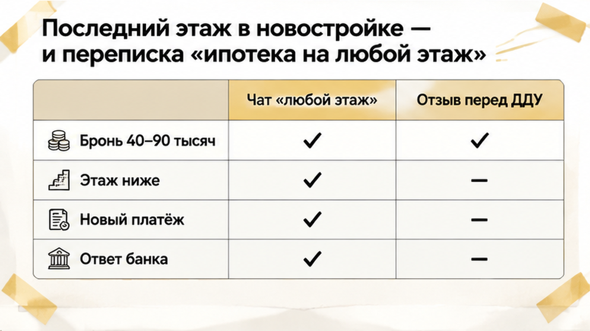
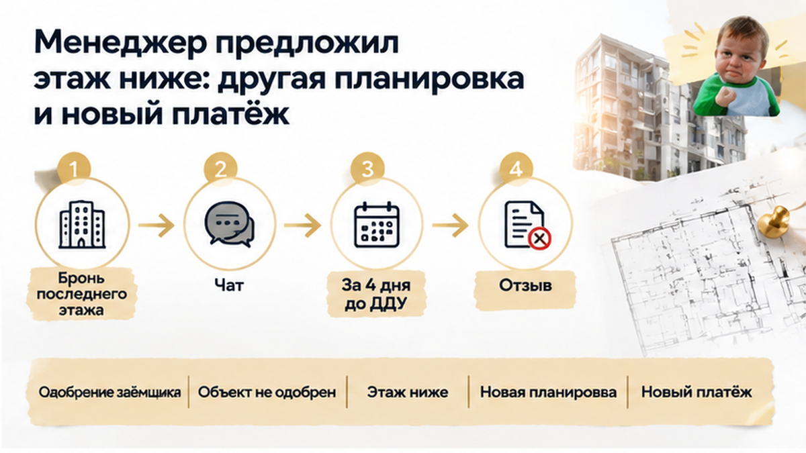
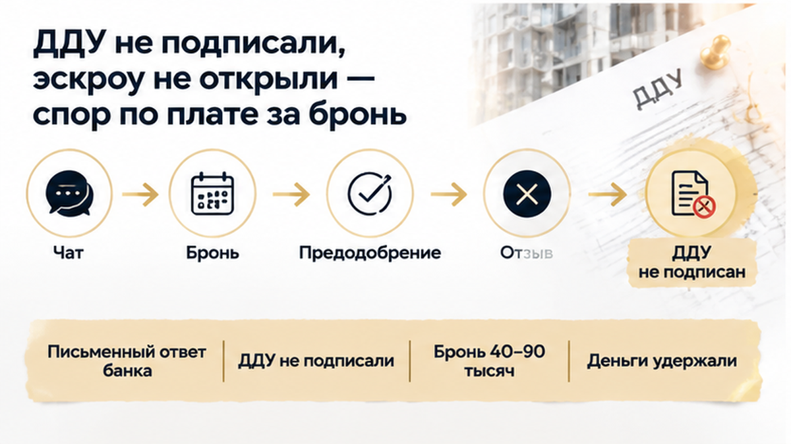

За четыре дня до подписания ДДУ банк снял ипотечное одобрение с квартиры на последнем этаже в новостройке Тюмени — сделка остановилась перед самым финишем. Платную бронь уже внесли, первоначальный взнос посчитали, будущий платёж включили в семейный бюджет. В отделе продаж до этого говорили: «Ипотека на любой этаж». Для семьи это звучало как решённый вопрос: можно готовиться к оформлению. Но когда банк проверил конкретный лот, прежнего одобрения оказалось недостаточно. Деньги на эскроу так и не открыли — семья успела остановиться до подписания ДДУ.
Я Святослав Шакин, The Риэлтор, Тюмень. Показываю, где в покупке новостройки заканчивается уверенное обещание менеджера и начинаются условия банка. Подписывайтесь на мой Telegram и MAX — там разбираю, что проверить до брони и передачи денег.
Семья показала менеджеру понравившийся лот и отдельно уточнила: точно ли банк пропустит такой вариант? Ответ про любой этаж остался в переписке. Предварительное одобрение у покупателей уже было, поэтому две вещи сложились в одну: заёмщика банк одобрил, значит, выбранную квартиру тоже можно брать.
Одобрение заёмщика не равно одобрению конкретного объекта. Сначала банк смотрит на доходы, кредитную нагрузку и способность семьи платить. Затем — на дом, корпус, стадию строительства и параметры квартиры. Она станет залогом: если заёмщик перестанет платить, банку придётся её продать, чтобы вернуть деньги. Поэтому квартиру проверяют отдельно.
Переписку с отделом продаж сохранить стоит: она показывает, как покупателю представляли условия сделки. Но банковский документ с конкретной квартирой, программой, суммой и сроком действия решения она не заменяет. Последний этаж сам по себе не означает запрет на ипотеку — требования у банков разные. В истории про ипотеку без первоначального взноса от застройщика вопрос был в условиях финансирования. Здесь слабое место обнаружилось при проверке выбранного лота.
После оплаты брони покупку считали уже не одним из вариантов, а ближайшей финансовой обязанностью. Дата подписания договора долевого участия — ДДУ — была обозначена. Семья ориентировалась на неё и на рассчитанный платёж: квартира выбрана, деньги распределены, осталось оформить.
Впереди были согласование документов и открытие эскроу — специального счёта, куда поступают деньги по ДДУ. До него семья ещё не дошла. Между «квартиру держат за нами» и подписанным договором оставались этапы, каждый со своими условиями.
У брони они тоже были отдельными: что оплачено, когда деньги возвращают или удерживают, можно ли зачесть сумму в другую квартиру. Ответы зависели от текста договора бронирования. Подготовка к ДДУ не превращала плату за бронь в деньги на эскроу. При этом оплаченная бронь действовала по собственному договору — судьба внесённых сумм зависела от его текста, а не от того, насколько близко семья подошла к подписанию.
Похожая развилка — в разборе о том, как семейную ипотеку одобрили, а эскроу не открыли. Положительное решение банка не запускает все следующие этапы автоматически. Здесь же семейный бюджет уже подстроили под покупку, хотя проверка квартиры ещё могла её остановить.

За четыре дня до подписания ДДУ семье пришло сообщение из банка: выбранная квартира не проходит. Уже собрали документы, согласовали покупку с застройщиком и подготовились к открытию эскроу. Но когда в заявке появился конкретный лот на последнем этаже, прежнего одобрения оказалось недостаточно. Фраза «ипотека на любой этаж» осталась в переписке с отделом продаж.
Сначала банк оценил заёмщиков: доходы, нагрузку, возможность платить по кредиту. Потом начал проверять квартиру, которая должна стать залогом. В расчёт могли попасть комплекс, корпус, стадия строительства и параметры лота. Одобрение заёмщика ещё не означает согласия банка на выбранный объект.
Покупатель слышит: «Вам одобрили ипотеку» — и считает вопрос закрытым. Но здесь нужно уточнить: на какую квартиру, по какой программе, на какую сумму и до какой даты действует решение? Без банковского документа нельзя уверенно сказать, что не устроило кредитора: сам лот, внутренние правила по объекту или необходимость покупать на других условиях — например, с большим первоначальным взносом.
Для семьи развилка была неприятной: отказаться от покупки на прежних условиях либо срочно искать дополнительные деньги. В истории, где перед ДДУ выросли ставка и ежемесячный платёж, изменились условия кредита. Здесь проблема возникла при проверке конкретной квартиры.
Последний этаж сам по себе не означает запрета на ипотеку: требования банков различаются. В обзорах среди возможных опасений называют протечки, состояние кровли и шум — всё, что может повлиять на последующую продажу жилья. Но это не доказанная причина отказа именно этой семье.
Даже скидка застройщика не заменяет банковского согласования. Продавец назначает цену, а банк оценивает залог по своим правилам. Переписка с менеджером сохраняет обещания отдела продаж, но согласие на кредит даёт банк.
После сообщения из банка менеджер предложил семье спуститься этажом ниже. Вроде бы выход рядом: бронь оплачена, сроки поджимают. Но у новой квартиры были другая планировка и другая цена. Пришлось заново считать, сколько своих денег понадобится, каким станет ежемесячный платёж и подходит ли семье сам объект.
Согласиться ради сохранения брони — это новое денежное решение, принятое в спешке. Семья покупает конкретные комнаты, площадь, окна и будущие расходы. Если квартира не подходит по быту, сохранённый срок сделки не делает её удачной.
Замену нужно было согласовать с банком: другой лот — новый объект залога. Изменение цены требует пересчёта кредита, первоначального взноса и платежа. Я в такой развилке сначала смотрю, подходит ли покупка семье и посильны ли расходы, а затем сравниваю их с риском потерять бронь.
Обещание менеджера подобрать замену полезно, но условия кредита должен письменно подтвердить банк. В истории о том, как семейную ипотеку одобрили, а эскроу ещё не открыли, видно, почему банковское «одобрено» ещё не завершает покупку. А у этой семьи оставался вопрос: что произойдёт с деньгами за первую бронь.
Семья остановила сделку: договор участия в долевом строительстве — ДДУ — не подписали, счёт эскроу не открыли. Деньги за квартиру туда не поступали, но по платной брони удержали ориентировочно 40 000–90 000 рублей. Спор остался вокруг договора бронирования: какую услугу оплатили и при каких условиях деньги возвращаются.
Отказ банка сам по себе не означает обязательного возврата всей платы. Но и слова менеджера «бронь невозвратная» не объясняют основание удержания. Защита средств на эскроу не распространяется автоматически на деньги, внесённые раньше по отдельному договору.
Если банк отказал от последнего этажа за четыре дня до ДДУ, вы бы согласились на этаж ниже, чтобы не потерять бронь, или сразу разорвали бы сделку?


Сначала нужен письменный ответ банка: не подходит сама квартира или условия её покупки? Общего законного запрета на ипотеку для последних этажей нет. Упоминания кровли, протечек и шума в обзорах не объясняют конкретный отказ, а скидка застройщика не гарантирует согласия банка.
| Что уточнить | Что получить до следующего платежа |
|---|---|
| Решение по выбранной квартире | Письменный ответ банка: объект, программа, сумма кредита, первоначальный взнос и срок действия решения. При отказе — причина и возможные условия покупки. |
| Квартира этажом ниже | Сравнение площади, планировки, цены, корпуса и срока передачи. Новый расчёт кредита и подтверждение банка по этой квартире. |
| Судьба первой брони | Условия возврата или удержания и письменный расчёт. При переносе денег на другую квартиру — условия зачёта до новой оплаты. |
| Готовность к ДДУ | Согласованные документы и понятный порядок открытия эскроу. |
Чек об оплате, переписку с менеджером и договор бронирования сохраните вместе. В договоре важно проверить, что обещали сделать за внесённую плату и как оформляется отказ. Если предлагают перенести бронь, запросите письменный расчёт до новой оплаты.
У семейной ипотеки ставка до 6%, первоначальный взнос от 20%, кредитный лимит для Тюмени — до 6 млн рублей. Но квартира тоже должна пройти проверку банка. В разборе о том, как семейную ипотеку одобрили, а эскроу не открыли, видно, почему одобрение программы ещё не равно завершённой сделке.
В истории, где перед ДДУ выросли ставка и платёж, вопрос был в стоимости кредита. Здесь спор начался после проверки квартиры. Поэтому объяснение про ипотечный рынок не заменит ответа по объекту, а сроки по заявке и брони — сравнения условий новой покупки.
В Telegram и MAX я разбираю такие развилки при покупке тюменских новостроек. Подписывайтесь, чтобы понимать, какие ответы нужны до оплаты брони.
Соглашаться на этаж ниже только ради внесённых денег я бы не торопился. Потеря брони болезненна, но не делает замену подходящей вашей семье — в ней потом жить, а не просто закрыть вопрос с оплаченной бронью. Пока новый платёж не внесён, можно сравнить квартиры, планировки и условия без спешки.
Предлагаю разбирать документы до аванса: сверять выбранную квартиру, письменные условия банка и обязательства по брони, пока деньги ещё у вас.